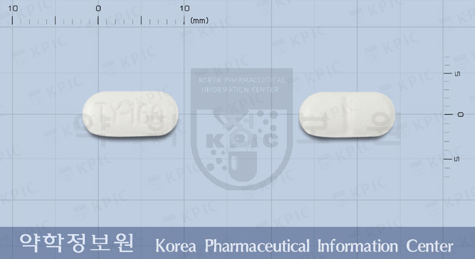

아세트아미노펜
출처 : 약학정보원
효능 : 해열 및 감기에 의한 동통(통증)과 두통, 치통, 근육통, 허리동통(통증), 생리통, 관절통의 완화
용법/용량 : 12세 이상의 소아 및 성인 매 8시간마다 2정씩 복용 (1300mg)
부작용/주의사항 : 1.간독성 2. 매일 세잔 이상 정기적으로 술을 마시는 사람이 이 약이나 다른 해열진통제를 복용해야 할 경우 반드시 의사 또는 약사와 상의해야 한다. 이러한 사람이 이 약을 복용하면 간손상이 유발될 수 있다.